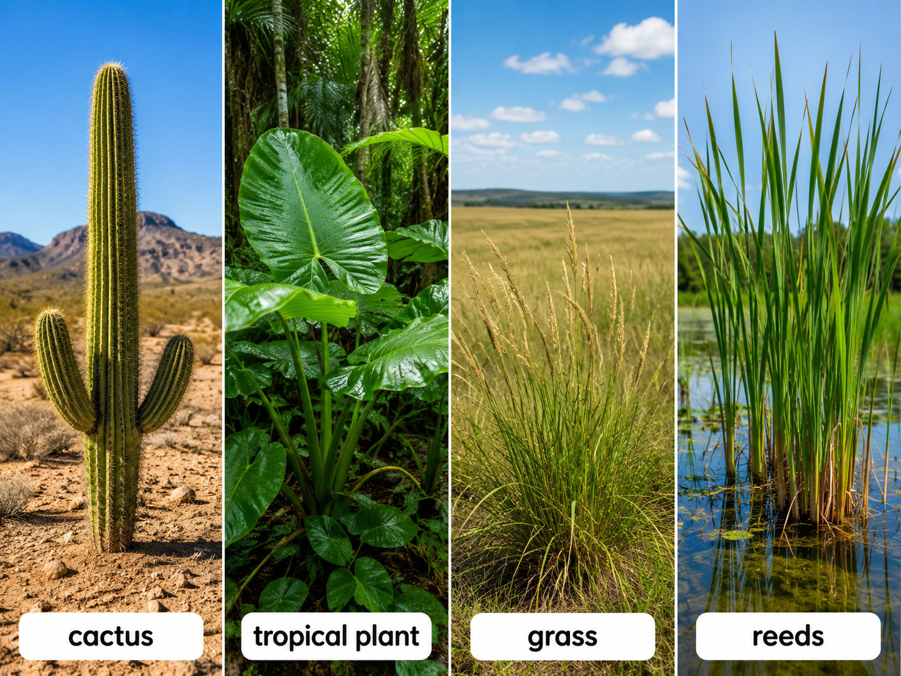
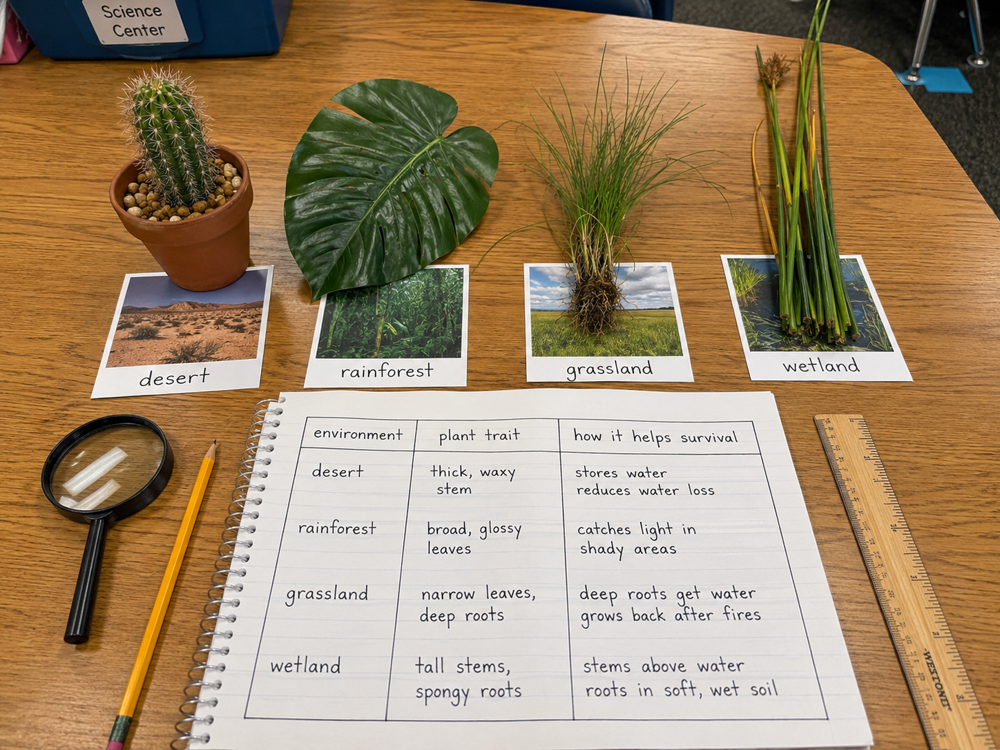
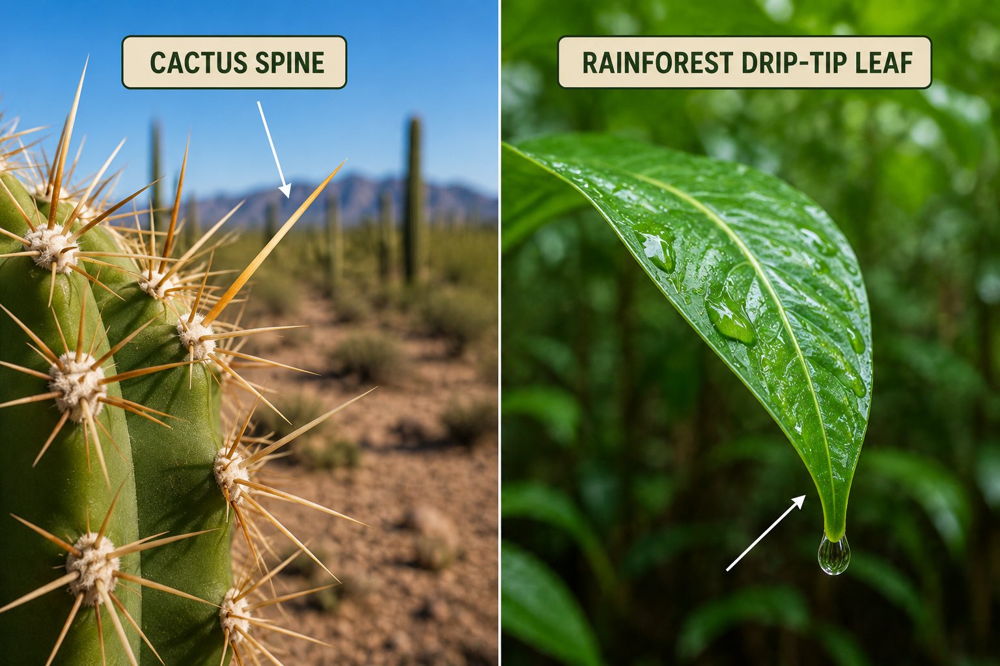
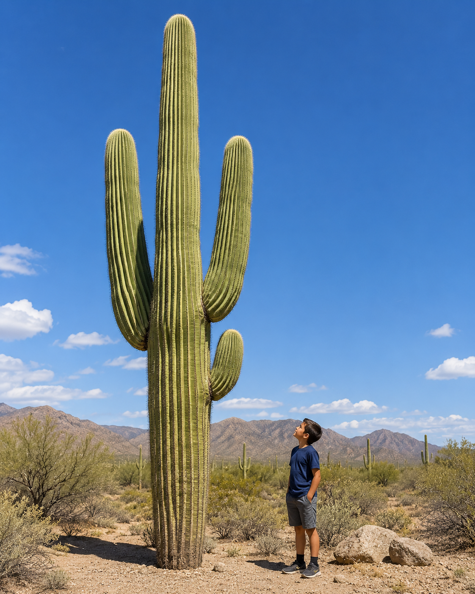
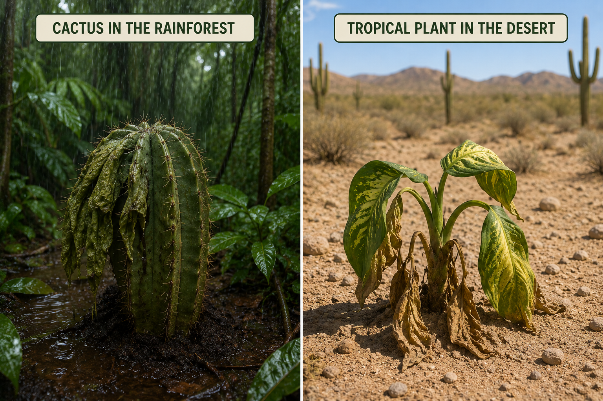

Hold this question in your mind as you work through the lesson. By the end, you should be able to answer it with evidence!
Start here. Learn the words you will use today.
Look at the four plants below. Each one lives in a completely different place — a desert, a rainforest, a grassland, and a wetland. Before you read anything, just look carefully.

There are no wrong observations. Scientists always start by looking carefully and asking questions. We'll come back to your ideas at the end of the lesson.
These are the words scientists use when they study how plants survive. Tap each card to flip it — you'll see these throughout the lesson!
Copy this sentence carefully into your science notebook:
"Plants have traits that help them survive — and the traits that work best depend on where the plant lives."
Now learn the main science idea.

Every plant has traitstraitA feature of a living thing — like leaf size, root depth, or stem shape. — features like leaf shape, root depth, or stem thickness. Some traits help a plant get water. Others help it catch sunlight, stay safe, or make seeds.
When a trait helps a plant survive in its environment, scientists call it an adaptationadaptationA trait that helps a plant or animal survive where it lives.. A plant with a useful adaptation has an advantageadvantageSomething that helps a plant survive or reproduce better than others. over plants that don't have it.
Desert plants must survive with very little water. A cactus stores water in its thick, waxy stem. Its spines — which are actually modified leaves — reduce water loss and keep animals away. These traits are adaptations to a hot, dry place.
Rainforest plants live where rain falls almost every day and tall trees block the sun. Many have wide, waxy leaves to catch as much light as possible in the shade. Some have "drip tips" — pointed leaf ends that channel water off quickly so the leaf doesn't rot. Wide leaves in a desert would lose too much water. Cactus spines in a rainforest wouldn't help much either. The same trait that helps in one place may hurt in another.

The root systemroot systemAll of a plant's roots — they take in water and anchor the plant in the soil. is an adaptation too. Desert cacti have shallow roots that spread wide to catch rain before it evaporates. Grassland plants often have deep roots that survive drought and fire underground. Wetland plants have spongy roots that can grow in flooded soil where other plants would drown.
Plants also need to reproducereproduceTo make new plants of the same kind, using seeds, spores, or other methods.. A plant that survives long enough to make seeds passes its helpful traits on. Over time, the plants with the best traits for that environment are the ones that keep growing there.
Real-World Connection: After a wildfire, grasslands can turn green again within weeks — because their deep roots survived underground the whole time.
Every plant has roots, stems, and leaves — but look how differently they work depending on the environment:
| Structure | Desert Function | Wetland Function |
|---|---|---|
| Roots | Spread wide and shallow to catch rare rain fast | Spongy roots that work underwater in flooded soil |
| Stems | Thick and waxy — store water for dry months | Tall and hollow — hold leaves above the water |
| Leaves | Tiny spines — almost no water loss | Long and narrow — catch sunlight above water |
Same three structures — completely different jobs. The environment shapes what each part does.
Plants have traits that help them survive in their environment. A trait that gives a plant an advantage is called an adaptation — and what works in one place may not work at all in another.
This is cause and effect: the environment shapes which traits help, and which don't.

Curious? Go Deeper
Some plants have taken adaptations to surprising extremes. The resurrection plant from the Chihuahuan Desert can lose almost all of its water — curling up and turning completely brown — and survive for years. When rain finally comes, it turns green and starts growing again within hours.
Scientists call this "desiccation tolerance." Most plants die if they lose even a quarter of their water. But this plant's cells stay intact through total drying. It's an adaptation so unusual that researchers study it hoping to apply the same idea to protect crops during droughts. What other extreme environments do you think produce the most surprising plant adaptations?
Now test the idea yourself.
You'll need: Science notebook, pencil, and the plant photo on the Lesson tab. You can also use the observation cards if you have them.
Follow each step carefully. Record your observations in your science notebook as you go.
Choose two environments. Pick any two from the diagram: desert, rainforest, grassland, or wetland. Write both at the top of your notebook page.
Build a comparison chart. Draw a three-column table: environment | plant trait | how the trait helps survival. Fill in at least two traits for each environment.
Pick one trait and draw it. Choose one trait from your chart. Draw that plant in its environment and label the trait you chose. Add a short note explaining why the trait helps there.
Swap it. Now imagine moving your plant from its environment into the other one. Write one sentence: what would happen to it there, and why? Would its traits still help?

Think about what you found. Being specific matters — a good scientist writes down exactly what they saw, not just "it worked" or "it didn't work."
Tell the story of your investigation from beginning to end — what you did, what you noticed, and what you figured out. Use your notes to help you.
Think through each question on your own. Write your answers in your science notebook before moving on.
Check what you understand.
Show what you learned.
🔍 Part A — Match the Trait
For each trait below, write which environment it belongs to and explain why it helps there. Use: desert, rainforest, grassland, wetland.
🚀 Part B — Short Answer
Answer each question in complete sentences. Use your science vocabulary!
Choose one plant from the lesson. Explain how its traits help it survive — and why those traits might not work in a different environment.
What do you think?
💡 Start with: "I think the [plant name] survives in the [environment] because…"
What did you observe or learn that supports your thinking?
💡 Start with: "I know this because the lesson showed that…"
Why does that make sense?
💡 Start with: "This makes sense because…"
📚 Try to use at least one of these words: adaptation, trait, advantage, environment
🎨 Part C — Draw & Label
Draw a plant in its environment. Label at least four traits on the plant. For each label, add a short note explaining what the trait does for the plant.
Submit your work on Canvas using one of these options:
Make sure your submission includes all of these: